Desde los pioneros del amateurismo hasta las leyendas de las Copas Libertadores, estos futbolistas dejaron una marca imborrable en la historia de Independiente.
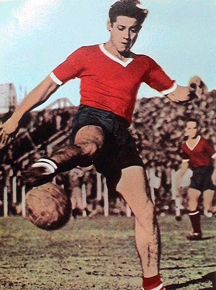
Máximo goleador histórico
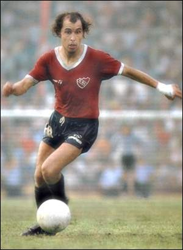
El máximo ídolo del club
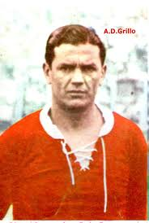
Leyenda del amateurismo
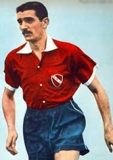
Figura histórica de los años 30 y 40
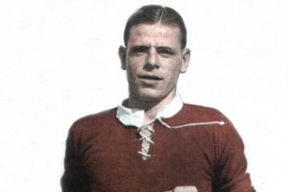
Uno de los mejores futbolistas argentinos
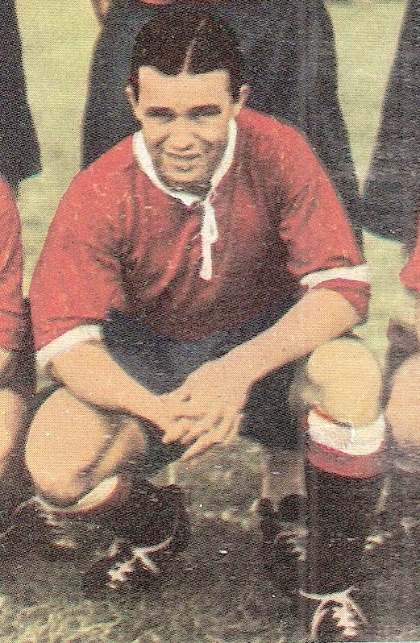
Referente de los años 20
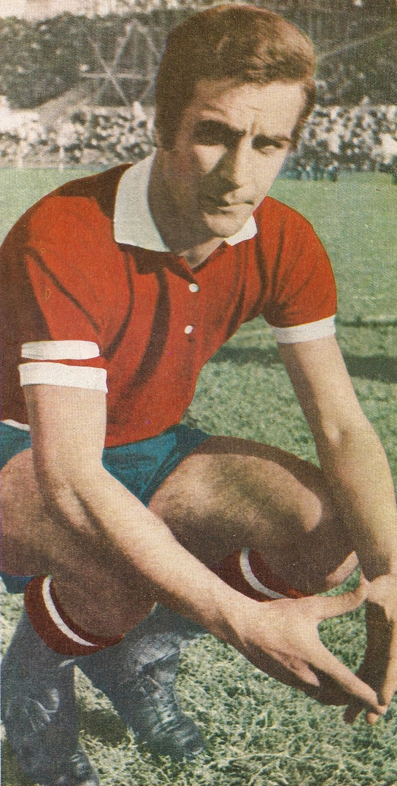
Capitán y entrenador campeón
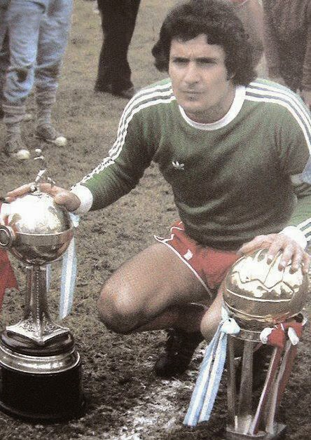
Arquero histórico del club
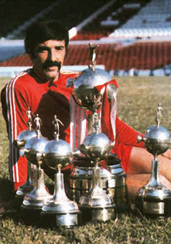
Récord de títulos internacionales
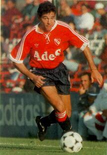
Campeón del Mundo e ídolo rojo
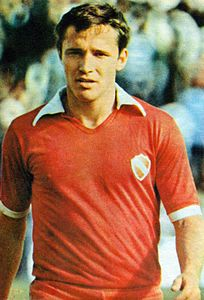
Figura de las Libertadores
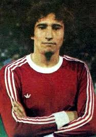
Gran goleador histórico
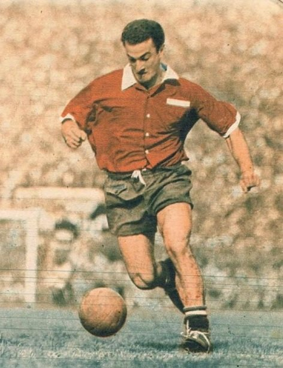
Delantero legendario
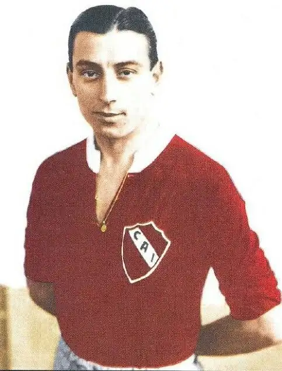
Figura internacional del club
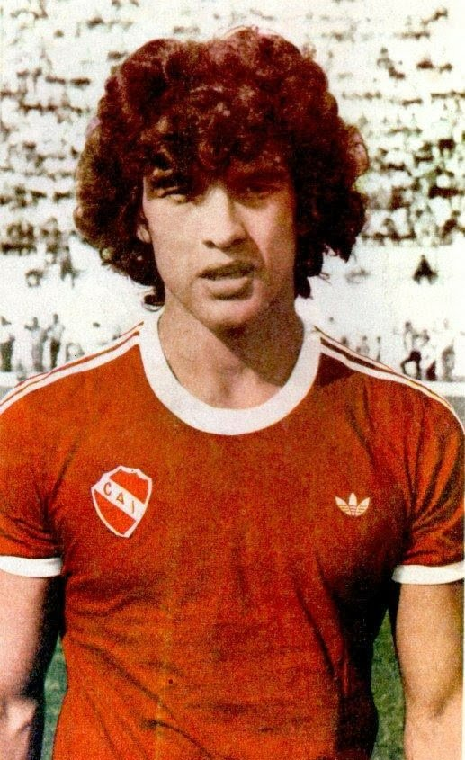
Leyenda de la primera época del club